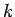
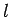

In the definition of the symplectic monoid
 we have introduced a
function called the coefficient of dilation. This is neccessarily
a regular function in the sense of algebraic geometry.
Now we will define its quantization which will be
called the quantum coefficient of dilation.
Using
notation (2) we see that
we have introduced a
function called the coefficient of dilation. This is neccessarily
a regular function in the sense of algebraic geometry.
Now we will define its quantization which will be
called the quantum coefficient of dilation.
Using
notation (2) we see that
is independent of , whereas
is independent of . But, as according to (5), both expressions coincide and consequently are independent of both and . Thus, the element
is well defined in
 . In fact it is a grouplike element of
this bialgebra. More precisely it is the coefficient function of the
one dimensional subcomodule of
. In fact it is a grouplike element of
this bialgebra. More precisely it is the coefficient function of the
one dimensional subcomodule of
 that is spanned by the
tensor
that is spanned by the
tensor
To see this, note that
for each
and that  is a morphism of
is a morphism of
 -comodules. One calculates
-comodules. One calculates
PROOF: We calculate
For  we deduce the connection formula
we deduce the connection formula
PROOF: By definition of bideterminants and the above lemma we have

Since
it follows that the expression vanishes if . In the case
we deduce from (7) the equation
which finishes the proof.